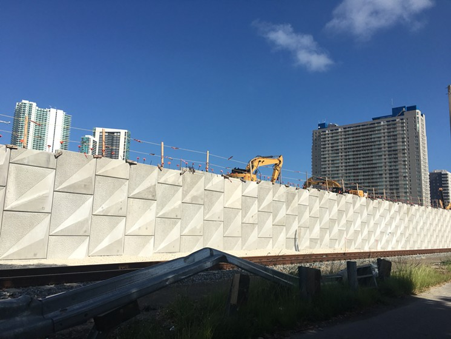
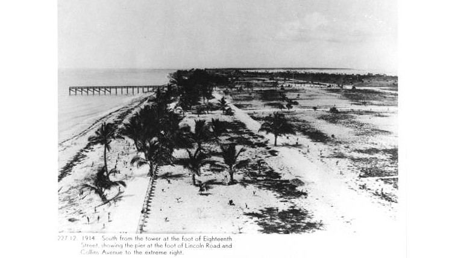
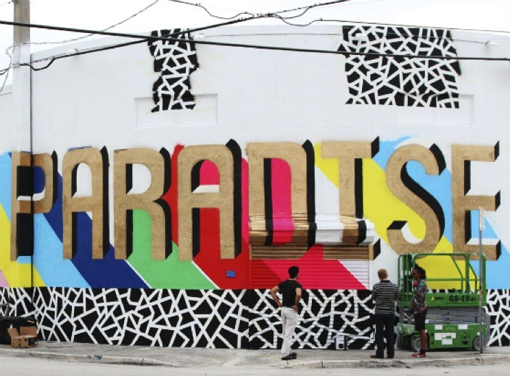

Modern day apartheid
A new wall has been constructed separating Overtown from Park West for a train that will transport people from Miami to Orlando. The wall will go from NW First Avenue from the I-395 overpass to the corner of NW Eighth Street. According to Clarence Woods, executive director of Southeast Overtown/Park West Community, “It’s not a wall. It’s a platform for the rail”. The first thing a white collar criminal reaches for must be a thesaurus. Whether a “platform” or a “wall”, it is no less exclusionary—there is no longer an “us” in a common space, rather, an “us” on one side and “them” on the other. Were Oertown a white neighborhood with resources, you can bet this would be a different a story.
Mother Nature versus Miami Beach
“If you live in South Florida and you’re not building a boat, you’re not facing reality.” -Jeff Goodell
In a weak effort to beat mother nature, Miami Beach has spent million dollars and counting as the profit motive rules out any other solution than to protect the high-priced realty—calculated at $40 billion worth of properties. This means that any ideas like depopulation are out of the question although this proposal is being discussed for Miami’s Shorecrest neighborhood. One can’t help but wonder what these hundreds of millions of dollars could be used for if other problems the city faces were seen as important as saving a drowning Miami Beach. How many homeless people could receive housing, health services and job training? How much could teacher salaries be increased to maintain the best teachers in the job and attract talent that would otherwise move into a higher paying field?
Wynwood: Cool Gentrification
[I] took chicken shit and made chicken salad.” -Lombardi, Wynwood DeveloperSome numbers: between 2012 and 2016 land prices in Wynwood more than quintuples and lease rates more than doubles. 2014 parking was suddenly not free in Wynwood as the City realized it too could profit from the gentrification happing in the area. In a city were income inequality is so great, developers like those that created Wynwood are hurting the city more than they are helping it.